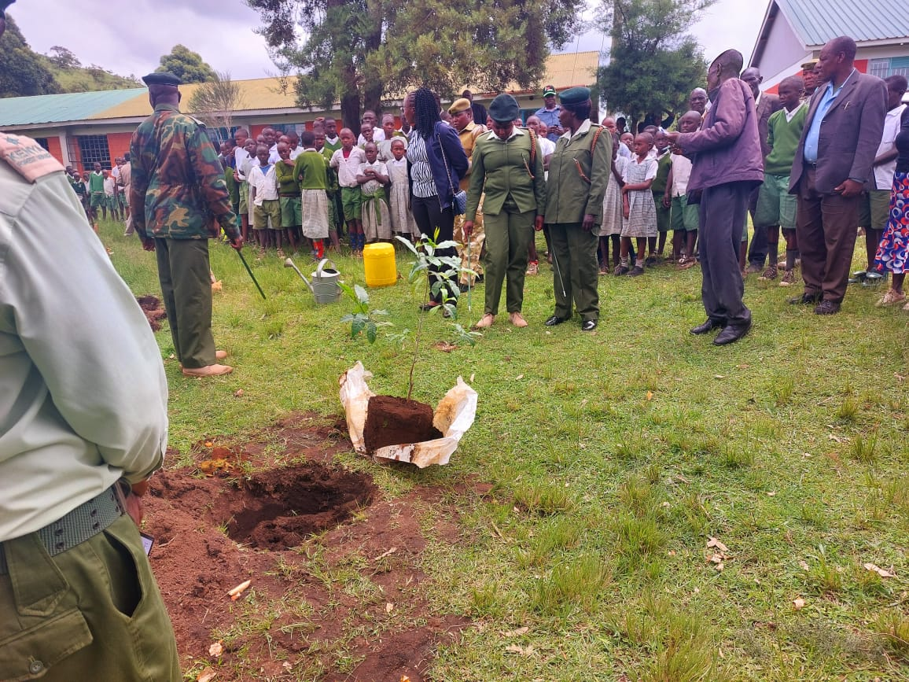

Reforestation and Land Restoration
Goal: Plant native tree species to improve soil fertility, increase biodiversity, and sequester carbon.
Activities: Community planting days, nursery support, and growth monitoring.
Impact: Stronger habitats, lower erosion, and better long-term land recovery.
Support This Work